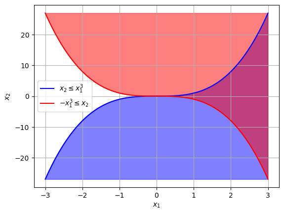

<!DOCTYPE html>


<html lang="en" data-content_root="../../" >

  <head>
    <meta charset="utf-8" />
    <meta name="viewport" content="width=device-width, initial-scale=1.0" /><meta name="viewport" content="width=device-width, initial-scale=1" />

    <title>7.4. Constraint Qualifications &#8212; Optimization for Decision Science</title>
  
  
  
  <script data-cfasync="false">
    document.documentElement.dataset.mode = localStorage.getItem("mode") || "";
    document.documentElement.dataset.theme = localStorage.getItem("theme") || "";
  </script>
  
  <!-- Loaded before other Sphinx assets -->
  <link href="../../_static/styles/theme.css?digest=dfe6caa3a7d634c4db9b" rel="stylesheet" />
<link href="../../_static/styles/bootstrap.css?digest=dfe6caa3a7d634c4db9b" rel="stylesheet" />
<link href="../../_static/styles/pydata-sphinx-theme.css?digest=dfe6caa3a7d634c4db9b" rel="stylesheet" />

  
  <link href="../../_static/vendor/fontawesome/6.5.2/css/all.min.css?digest=dfe6caa3a7d634c4db9b" rel="stylesheet" />
  <link rel="preload" as="font" type="font/woff2" crossorigin href="../../_static/vendor/fontawesome/6.5.2/webfonts/fa-solid-900.woff2" />
<link rel="preload" as="font" type="font/woff2" crossorigin href="../../_static/vendor/fontawesome/6.5.2/webfonts/fa-brands-400.woff2" />
<link rel="preload" as="font" type="font/woff2" crossorigin href="../../_static/vendor/fontawesome/6.5.2/webfonts/fa-regular-400.woff2" />

    <link rel="stylesheet" type="text/css" href="../../_static/pygments.css?v=03e43079" />
    <link rel="stylesheet" type="text/css" href="../../_static/styles/sphinx-book-theme.css?v=eba8b062" />
    <link rel="stylesheet" type="text/css" href="../../_static/togglebutton.css?v=13237357" />
    <link rel="stylesheet" type="text/css" href="../../_static/copybutton.css?v=76b2166b" />
    <link rel="stylesheet" type="text/css" href="../../_static/mystnb.4510f1fc1dee50b3e5859aac5469c37c29e427902b24a333a5f9fcb2f0b3ac41.css" />
    <link rel="stylesheet" type="text/css" href="../../_static/sphinx-thebe.css?v=4fa983c6" />
    <link rel="stylesheet" type="text/css" href="../../_static/sphinx-design.min.css?v=95c83b7e" />
  
  <!-- Pre-loaded scripts that we'll load fully later -->
  <link rel="preload" as="script" href="../../_static/scripts/bootstrap.js?digest=dfe6caa3a7d634c4db9b" />
<link rel="preload" as="script" href="../../_static/scripts/pydata-sphinx-theme.js?digest=dfe6caa3a7d634c4db9b" />
  <script src="../../_static/vendor/fontawesome/6.5.2/js/all.min.js?digest=dfe6caa3a7d634c4db9b"></script>

    <script src="../../_static/documentation_options.js?v=9eb32ce0"></script>
    <script src="../../_static/doctools.js?v=9a2dae69"></script>
    <script src="../../_static/sphinx_highlight.js?v=dc90522c"></script>
    <script src="../../_static/clipboard.min.js?v=a7894cd8"></script>
    <script src="../../_static/copybutton.js?v=f281be69"></script>
    <script src="../../_static/scripts/sphinx-book-theme.js?v=887ef09a"></script>
    <script>let toggleHintShow = 'Click to show';</script>
    <script>let toggleHintHide = 'Click to hide';</script>
    <script>let toggleOpenOnPrint = 'true';</script>
    <script src="../../_static/togglebutton.js?v=4a39c7ea"></script>
    <script>var togglebuttonSelector = '.toggle, .admonition.dropdown';</script>
    <script src="../../_static/design-tabs.js?v=f930bc37"></script>
    <script>const THEBE_JS_URL = "https://unpkg.com/thebe@0.8.2/lib/index.js"; const thebe_selector = ".thebe,.cell"; const thebe_selector_input = "pre"; const thebe_selector_output = ".output, .cell_output"</script>
    <script async="async" src="../../_static/sphinx-thebe.js?v=c100c467"></script>
    <script>var togglebuttonSelector = '.toggle, .admonition.dropdown';</script>
    <script>const THEBE_JS_URL = "https://unpkg.com/thebe@0.8.2/lib/index.js"; const thebe_selector = ".thebe,.cell"; const thebe_selector_input = "pre"; const thebe_selector_output = ".output, .cell_output"</script>
    <script>window.MathJax = {"options": {"processHtmlClass": "tex2jax_process|mathjax_process|math|output_area"}}</script>
    <script defer="defer" src="https://cdn.jsdelivr.net/npm/mathjax@3/es5/tex-mml-chtml.js"></script>
    <script>DOCUMENTATION_OPTIONS.pagename = 'notebooks/7/Constraint-Qualifications';</script>
    <link rel="index" title="Index" href="../../genindex.html" />
    <link rel="search" title="Search" href="../../search.html" />
    <link rel="next" title="7.5. Second Order Optimality Conditions" href="Second-Order.html" />
    <link rel="prev" title="7.3. Analysis of KKT Conditions" href="KKT-Multipliers.html" />
  <meta name="viewport" content="width=device-width, initial-scale=1"/>
  <meta name="docsearch:language" content="en"/>
  </head>
  
  
  <body data-bs-spy="scroll" data-bs-target=".bd-toc-nav" data-offset="180" data-bs-root-margin="0px 0px -60%" data-default-mode="">

  
  
  <div id="pst-skip-link" class="skip-link d-print-none"><a href="#main-content">Skip to main content</a></div>
  
  <div id="pst-scroll-pixel-helper"></div>
  
  <button type="button" class="btn rounded-pill" id="pst-back-to-top">
    <i class="fa-solid fa-arrow-up"></i>Back to top</button>

  
  <input type="checkbox"
          class="sidebar-toggle"
          id="pst-primary-sidebar-checkbox"/>
  <label class="overlay overlay-primary" for="pst-primary-sidebar-checkbox"></label>
  
  <input type="checkbox"
          class="sidebar-toggle"
          id="pst-secondary-sidebar-checkbox"/>
  <label class="overlay overlay-secondary" for="pst-secondary-sidebar-checkbox"></label>
  
  <div class="search-button__wrapper">
    <div class="search-button__overlay"></div>
    <div class="search-button__search-container">
<form class="bd-search d-flex align-items-center"
      action="../../search.html"
      method="get">
  <i class="fa-solid fa-magnifying-glass"></i>
  <input type="search"
         class="form-control"
         name="q"
         id="search-input"
         placeholder="Search this book..."
         aria-label="Search this book..."
         autocomplete="off"
         autocorrect="off"
         autocapitalize="off"
         spellcheck="false"/>
  <span class="search-button__kbd-shortcut"><kbd class="kbd-shortcut__modifier">Ctrl</kbd>+<kbd>K</kbd></span>
</form></div>
  </div>

  <div class="pst-async-banner-revealer d-none">
  <aside id="bd-header-version-warning" class="d-none d-print-none" aria-label="Version warning"></aside>
</div>

  
    <header class="bd-header navbar navbar-expand-lg bd-navbar d-print-none">
    </header>
  

  <div class="bd-container">
    <div class="bd-container__inner bd-page-width">
      
      
      
      <div class="bd-sidebar-primary bd-sidebar">
        

  
  <div class="sidebar-header-items sidebar-primary__section">
    
    
    
    
  </div>
  
    <div class="sidebar-primary-items__start sidebar-primary__section">
        <div class="sidebar-primary-item">

  
    
  

<a class="navbar-brand logo" href="../../intro.html">
  
  
  
  
  
    
    
      
    
    
    
    <script>document.write(``);</script>
  
  
</a></div>
        <div class="sidebar-primary-item">

 <script>
 document.write(`
   <button class="btn search-button-field search-button__button" title="Search" aria-label="Search" data-bs-placement="bottom" data-bs-toggle="tooltip">
    <i class="fa-solid fa-magnifying-glass"></i>
    <span class="search-button__default-text">Search</span>
    <span class="search-button__kbd-shortcut"><kbd class="kbd-shortcut__modifier">Ctrl</kbd>+<kbd class="kbd-shortcut__modifier">K</kbd></span>
   </button>
 `);
 </script></div>
        <div class="sidebar-primary-item"><nav class="bd-links bd-docs-nav" aria-label="Main">
    <div class="bd-toc-item navbar-nav active">
        
        <ul class="nav bd-sidenav bd-sidenav__home-link">
            <li class="toctree-l1">
                <a class="reference internal" href="../../intro.html">
                    Optimization for Decision Science
                </a>
            </li>
        </ul>
        <p aria-level="2" class="caption" role="heading"><span class="caption-text">Organization</span></p>
<ul class="nav bd-sidenav">
<li class="toctree-l1 has-children"><a class="reference internal" href="../../org/intro.html">Welcome</a><details><summary><span class="toctree-toggle" role="presentation"><i class="fa-solid fa-chevron-down"></i></span></summary><ul>
<li class="toctree-l2"><a class="reference internal" href="../../org/syllabus.html">Syllabus</a></li>
<li class="toctree-l2"><a class="reference internal" href="../../org/calendar.html">Fall 2024 Calendar</a></li>
<li class="toctree-l2"><a class="reference internal" href="../../org/contribute.html">Contribution Instructions</a></li>
<li class="toctree-l2"><a class="reference internal" href="../../org/workshop.html">Computational Optimization in Python (São Paulo, Brazil)</a></li>
</ul>
</details></li>
<li class="toctree-l1 has-children"><a class="reference internal" href="../../org/assignments.html">Assignments</a><details><summary><span class="toctree-toggle" role="presentation"><i class="fa-solid fa-chevron-down"></i></span></summary><ul>
<li class="toctree-l2"><a class="reference internal" href="../assignments/Pyomo1.html">Pyomo Homework 1</a></li>
<li class="toctree-l2"><a class="reference internal" href="../assignments/Pyomo2.html">Pyomo Homework 2</a></li>
<li class="toctree-l2"><a class="reference internal" href="../assignments/Pyomo3.html">Pyomo Homework 3</a></li>
<li class="toctree-l2"><a class="reference internal" href="../../org/project1.html">Project 1</a></li>
<li class="toctree-l2"><a class="reference internal" href="../assignments/Algorithms1.html">Algorithms Homework 1</a></li>
<li class="toctree-l2"><a class="reference internal" href="../assignments/Algorithms2.html">Algorithms Homework 2</a></li>
<li class="toctree-l2"><a class="reference internal" href="../../org/project2.html">Project 2</a></li>
<li class="toctree-l2"><a class="reference internal" href="../assignments/Algorithms3.html">Algorithms Homework 3</a></li>
<li class="toctree-l2"><a class="reference internal" href="../assignments/Algorithms4.html">Algorithms Homework 4</a></li>
</ul>
</details></li>
<li class="toctree-l1 has-children"><a class="reference internal" href="../../org/archive.html">Archive</a><details><summary><span class="toctree-toggle" role="presentation"><i class="fa-solid fa-chevron-down"></i></span></summary><ul>
<li class="toctree-l2"><a class="reference internal" href="../assignments/Pyomo-Mini-Project.html">Pyomo Mini-Project: Receding Horizon Stochastic Control</a></li>
<li class="toctree-l2"><a class="reference internal" href="../../org/semester_project.html">Semester Project (Spring 2023)</a></li>
</ul>
</details></li>
</ul>
<p aria-level="2" class="caption" role="heading"><span class="caption-text">Optimization Modeling in Pyomo</span></p>
<ul class="nav bd-sidenav">
<li class="toctree-l1 has-children"><a class="reference internal" href="../1/getting-started.html">1. Getting Started with Pyomo</a><details><summary><span class="toctree-toggle" role="presentation"><i class="fa-solid fa-chevron-down"></i></span></summary><ul>
<li class="toctree-l2"><a class="reference internal" href="../1/Local-Install.html">1.1. Local Installation</a></li>
<li class="toctree-l2"><a class="reference internal" href="../1/Optimization-Modeling.html">1.2. Optimization Modeling with Applications</a></li>
<li class="toctree-l2"><a class="reference internal" href="../1/Pyomo-Introduction.html">1.3. Your First Optimization Problem</a></li>
<li class="toctree-l2"><a class="reference internal" href="../1/LP.html">1.4. Continuous Optimization: Linear Programming</a></li>
<li class="toctree-l2"><a class="reference internal" href="../1/NLP.html">1.5. Continuous Optimization: Nonlinear Programming</a></li>
<li class="toctree-l2"><a class="reference internal" href="../1/IP.html">1.6. Integer Programs</a></li>
<li class="toctree-l2"><a class="reference internal" href="../1/Pyomo-Nuts-and-Bolts.html">1.7. 60 Minutes to Pyomo: An Energy Storage Model Predictive Control Example</a></li>
</ul>
</details></li>
<li class="toctree-l1 has-children"><a class="reference internal" href="../2/logic.html">2. Logical Modeling</a><details><summary><span class="toctree-toggle" role="presentation"><i class="fa-solid fa-chevron-down"></i></span></summary><ul>
<li class="toctree-l2"><a class="reference internal" href="../2/Logical_Modeling_GDP.html">2.1. Logical Modeling and Generalized Disjunctive Programs</a></li>
<li class="toctree-l2"><a class="reference internal" href="../2/Modeling_Disjunctions_Strip_Packing.html">2.2. Modeling Disjunctions through the Strip Packing Problem</a></li>
</ul>
</details></li>
<li class="toctree-l1 has-children"><a class="reference internal" href="../3/dynamics.html">3. Dynamic Optimization</a><details><summary><span class="toctree-toggle" role="presentation"><i class="fa-solid fa-chevron-down"></i></span></summary><ul>
<li class="toctree-l2"><a class="reference internal" href="../3/PyomoDAE_car.html">3.1. Pyomo.DAE Example: Race Car</a></li>
<li class="toctree-l2"><a class="reference internal" href="../3/PyomoDAE_TCLab.html">3.2. Pyomo.DAE Example: Temperature Control Lab</a></li>
<li class="toctree-l2"><a class="reference internal" href="../3/DAE_background.html">3.3. Differential Algebraic Equations (DAEs)</a></li>
<li class="toctree-l2"><a class="reference internal" href="../3/DAE_numeric_integration.html">3.4. Numeric Integration for DAEs</a></li>
<li class="toctree-l2"><a class="reference internal" href="../3/PyomoDAE_theory.html">3.5. Dynamic Optimization with Collocation and Pyomo.DAE</a></li>
<li class="toctree-l2"><a class="reference internal" href="../3/PyomoDAE_example.html">3.6. Pyomo.DAE: Racing Example Revisited</a></li>
</ul>
</details></li>
<li class="toctree-l1 has-children"><a class="reference internal" href="../4/uncertainty.html">4. Optimization Under Uncertainty</a><details><summary><span class="toctree-toggle" role="presentation"><i class="fa-solid fa-chevron-down"></i></span></summary><ul>
<li class="toctree-l2"><a class="reference internal" href="../4/SP.html">4.1. Stochastic Programming</a></li>
<li class="toctree-l2"><a class="reference internal" href="../4/blocks.html">4.2. Blocks and Other Pyomo Best Practices</a></li>
<li class="toctree-l2"><a class="reference internal" href="../4/AdvancedTopics.html">4.3. Advanced Topics in Stochastic Programming</a></li>
<li class="toctree-l2"><a class="reference internal" href="../4/RiskMeasures.html">4.4. Risk Measures and Portfolio Optimization</a></li>
</ul>
</details></li>
<li class="toctree-l1 has-children"><a class="reference internal" href="../5/data.html">5. Data Science and Applied Statistics</a><details><summary><span class="toctree-toggle" role="presentation"><i class="fa-solid fa-chevron-down"></i></span></summary><ul>
<li class="toctree-l2"><a class="reference internal" href="../5/Parmest-tutorial.html">5.1. Parameter estimation with <code class="docutils literal notranslate"><span class="pre">parmest</span></code></a></li>
<li class="toctree-l2"><a class="reference internal" href="../5/Parmest-generate-data.html">5.2. Supplementary material: data for parmest tutorial</a></li>
<li class="toctree-l2"><a class="reference internal" href="../5/Pyomo_DoE_Tutorial.html">5.3. Optimizing Experiments with <code class="docutils literal notranslate"><span class="pre">Pyomo.DoE</span></code></a></li>
</ul>
</details></li>
</ul>
<p aria-level="2" class="caption" role="heading"><span class="caption-text">Algorithms and Theory</span></p>
<ul class="current nav bd-sidenav">
<li class="toctree-l1 has-children"><a class="reference internal" href="../6/unconstrained.html">6. Unconstrained Nonlinear Optimization</a><details><summary><span class="toctree-toggle" role="presentation"><i class="fa-solid fa-chevron-down"></i></span></summary><ul>
<li class="toctree-l2"><a class="reference internal" href="../6/Math-Primer-1.html">6.1. Linear Algebra Review and SciPy Basics</a></li>
<li class="toctree-l2"><a class="reference internal" href="../6/Math-Primer-2.html">6.2. Mathematics Primer</a></li>
<li class="toctree-l2"><a class="reference internal" href="../6/Optimality.html">6.3. Unconstrained Optimality Conditions</a></li>
<li class="toctree-l2"><a class="reference internal" href="../6/Newton-Methods.html">6.4. Newton-type Methods for Unconstrained Optimization</a></li>
<li class="toctree-l2"><a class="reference internal" href="../6/Quasi-Newton-Methods.html">6.5. Quasi-Newton Methods for Unconstrained Optimization</a></li>
<li class="toctree-l2"><a class="reference internal" href="../6/Globalization.html">6.6. Descent and Globalization</a></li>
</ul>
</details></li>
<li class="toctree-l1 current active has-children"><a class="reference internal" href="constrained.html">7. Constrained Nonlinear Optimization</a><details open="open"><summary><span class="toctree-toggle" role="presentation"><i class="fa-solid fa-chevron-down"></i></span></summary><ul class="current">
<li class="toctree-l2"><a class="reference internal" href="Convexity.html">7.1. Convexity Revisited</a></li>
<li class="toctree-l2"><a class="reference internal" href="Local-Optimality.html">7.2. Local Optimality Conditions</a></li>
<li class="toctree-l2"><a class="reference internal" href="KKT-Multipliers.html">7.3. Analysis of KKT Conditions</a></li>
<li class="toctree-l2 current active"><a class="current reference internal" href="#">7.4. Constraint Qualifications</a></li>
<li class="toctree-l2"><a class="reference internal" href="Second-Order.html">7.5. Second Order Optimality Conditions</a></li>
<li class="toctree-l2"><a class="reference internal" href="degeneracy_hunter.html">7.6. NLP Diagnostics with Degeneracy Hunter</a></li>
<li class="toctree-l2"><a class="reference internal" href="Interior-Point1.html">7.7. Simple Netwon Method for Equality Constrained NLPs</a></li>
<li class="toctree-l2"><a class="reference internal" href="Interior-Point2.html">7.8. Inertia-Corrected Netwon Method for Equality Constrained NLPs</a></li>
</ul>
</details></li>
<li class="toctree-l1 has-children"><a class="reference internal" href="../8/special-topics.html">8. Special Topics</a><details><summary><span class="toctree-toggle" role="presentation"><i class="fa-solid fa-chevron-down"></i></span></summary><ul>
<li class="toctree-l2"><a class="reference internal" href="../8/MILP.html">8.1. Integer Programming with Simple Branch and Bound</a></li>
<li class="toctree-l2"><a class="reference internal" href="../8/MINLP-Algorithms.html">8.2. MINLP Algorithms</a></li>
<li class="toctree-l2"><a class="reference internal" href="../8/Global-Opt.html">8.3. Deterministic Global Optimization</a></li>
</ul>
</details></li>
</ul>
<p aria-level="2" class="caption" role="heading"><span class="caption-text">Student Contributions</span></p>
<ul class="nav bd-sidenav">
<li class="toctree-l1 has-children"><a class="reference internal" href="../contrib/pyomo.html">More Pyomo Examples</a><details><summary><span class="toctree-toggle" role="presentation"><i class="fa-solid fa-chevron-down"></i></span></summary><ul>
<li class="toctree-l2"><a class="reference internal" href="../contrib/semiconductor_manufacturing.html">Semiconductor Production Planning</a></li>
<li class="toctree-l2"><a class="reference internal" href="../contrib/student_diet.html">Optimization of Daily Diet Using Pyomo</a></li>
<li class="toctree-l2"><a class="reference internal" href="../contrib/blending.html">Blending Under Uncertainty</a></li>
<li class="toctree-l2"><a class="reference internal" href="../contrib/vehicle_routing.html">Vehicle Routing</a></li>

<li class="toctree-l2"><a class="reference internal" href="../contrib/portfolio_optimization_extended.html">Risk Measures and Portfolio Optimization: Expanded</a></li>
<li class="toctree-l2"><a class="reference internal" href="../contrib/race_car_extended.html">Extended Race Car Optimization Models</a></li>
<li class="toctree-l2"><a class="reference internal" href="../contrib/hot_air_balloon.html">Hot Air Balloon Dynamic Control</a></li>
<li class="toctree-l2"><a class="reference internal" href="../contrib/reactor_design.html">Chemical Reactor Design</a></li>
<li class="toctree-l2"><a class="reference internal" href="../contrib/Disaster_Response_Plan.html">Disaster Response Plan Optimization</a></li>
<li class="toctree-l2"><a class="reference internal" href="../contrib/Sudoku_Solver.html">Sudoku Solver</a></li>
<li class="toctree-l2"><a class="reference internal" href="../contrib/more_circle_packing.html">Circle Packing Optimization</a></li>
</ul>
</details></li>
<li class="toctree-l1 has-children"><a class="reference internal" href="../contrib/modeling.html">Modeling Paradigms</a><details><summary><span class="toctree-toggle" role="presentation"><i class="fa-solid fa-chevron-down"></i></span></summary><ul>
<li class="toctree-l2"><a class="reference internal" href="../contrib/multi_objective.html">Multi-Objective Optimization</a></li>
<li class="toctree-l2"><a class="reference internal" href="../contrib/advanced_stochastic_programming.html">Advanced Topics in Stochastic Programming</a></li>


</ul>
</details></li>
<li class="toctree-l1 has-children"><a class="reference internal" href="../contrib/algorithms.html">Global Optimization</a><details><summary><span class="toctree-toggle" role="presentation"><i class="fa-solid fa-chevron-down"></i></span></summary><ul>
<li class="toctree-l2"><a class="reference internal" href="../contrib/Deterministic_Global_Optimization.html">Deterministic Global Optimization</a></li>
<li class="toctree-l2"><a class="reference internal" href="../contrib/Bayesian_Optimization1.html">Bayesian Optimization Tutorial 1</a></li>
<li class="toctree-l2"><a class="reference internal" href="../contrib/Bayesian_Optimization2.html">Bayesian Optimization Tutorial 2</a></li>
</ul>
</details></li>
<li class="toctree-l1 has-children"><a class="reference internal" href="../contrib/sgd.html">Stochastic Gradient Descent</a><details><summary><span class="toctree-toggle" role="presentation"><i class="fa-solid fa-chevron-down"></i></span></summary><ul>
<li class="toctree-l2"><a class="reference internal" href="../contrib/Stochastic-Gradient-Descent-1.html">Stochastic Gradient Descent Tutorial 1</a></li>
<li class="toctree-l2"><a class="reference internal" href="../contrib/Stochastic-Gradient-Descent-2.html">Stochastic Gradient Descent Tutorial 2</a></li>


<li class="toctree-l2"><a class="reference internal" href="../contrib/Stochastic-Gradient-Descent-3.html">Stochastic Gradient Descent Tutorial 3</a></li>
</ul>
</details></li>
<li class="toctree-l1 has-children"><a class="reference internal" href="../contrib/data.html">Machine Learning and Applied Statistics</a><details><summary><span class="toctree-toggle" role="presentation"><i class="fa-solid fa-chevron-down"></i></span></summary><ul>
<li class="toctree-l2"><a class="reference internal" href="../contrib/EM-MAP.html">Expectation Maximization Algorithm and MAP Estimation</a></li>
</ul>
</details></li>
</ul>

    </div>
</nav></div>
    </div>
  
  
  <div class="sidebar-primary-items__end sidebar-primary__section">
  </div>
  
  <div id="rtd-footer-container"></div>


      </div>
      
      <main id="main-content" class="bd-main" role="main">
        
        

<div class="sbt-scroll-pixel-helper"></div>

          <div class="bd-content">
            <div class="bd-article-container">
              
              <div class="bd-header-article d-print-none">
<div class="header-article-items header-article__inner">
  
    <div class="header-article-items__start">
      
        <div class="header-article-item"><button class="sidebar-toggle primary-toggle btn btn-sm" title="Toggle primary sidebar" data-bs-placement="bottom" data-bs-toggle="tooltip">
  <span class="fa-solid fa-bars"></span>
</button></div>
      
    </div>
  
  
    <div class="header-article-items__end">
      
        <div class="header-article-item">

<div class="article-header-buttons">


<div class="dropdown dropdown-launch-buttons">
  <button class="btn dropdown-toggle" type="button" data-bs-toggle="dropdown" aria-expanded="false" aria-label="Launch interactive content">
    <i class="fas fa-rocket"></i>
  </button>
  <ul class="dropdown-menu">
      
      
      
      <li><a href="https://colab.research.google.com/github/ndcbe/optimization/blob/master/notebooks/7/Constraint-Qualifications.ipynb" target="_blank"
   class="btn btn-sm dropdown-item"
   title="Launch on Colab"
   data-bs-placement="left" data-bs-toggle="tooltip"
>
  

<span class="btn__icon-container">
  
    
  </span>
<span class="btn__text-container">Colab</span>
</a>
</li>
      
  </ul>
</div>


<div class="dropdown dropdown-source-buttons">
  <button class="btn dropdown-toggle" type="button" data-bs-toggle="dropdown" aria-expanded="false" aria-label="Source repositories">
    <i class="fab fa-github"></i>
  </button>
  <ul class="dropdown-menu">
      
      
      
      <li><a href="https://github.com/ndcbe/optimization" target="_blank"
   class="btn btn-sm btn-source-repository-button dropdown-item"
   title="Source repository"
   data-bs-placement="left" data-bs-toggle="tooltip"
>
  

<span class="btn__icon-container">
  <i class="fab fa-github"></i>
  </span>
<span class="btn__text-container">Repository</span>
</a>
</li>
      
      
      
      
      <li><a href="https://github.com/ndcbe/optimization/issues/new?title=Issue%20on%20page%20%2Fnotebooks/7/Constraint-Qualifications.html&body=Your%20issue%20content%20here." target="_blank"
   class="btn btn-sm btn-source-issues-button dropdown-item"
   title="Open an issue"
   data-bs-placement="left" data-bs-toggle="tooltip"
>
  

<span class="btn__icon-container">
  <i class="fas fa-lightbulb"></i>
  </span>
<span class="btn__text-container">Open issue</span>
</a>
</li>
      
  </ul>
</div>


<div class="dropdown dropdown-download-buttons">
  <button class="btn dropdown-toggle" type="button" data-bs-toggle="dropdown" aria-expanded="false" aria-label="Download this page">
    <i class="fas fa-download"></i>
  </button>
  <ul class="dropdown-menu">
      
      
      
      <li><a href="../../_sources/notebooks/7/Constraint-Qualifications.ipynb" target="_blank"
   class="btn btn-sm btn-download-source-button dropdown-item"
   title="Download source file"
   data-bs-placement="left" data-bs-toggle="tooltip"
>
  

<span class="btn__icon-container">
  <i class="fas fa-file"></i>
  </span>
<span class="btn__text-container">.ipynb</span>
</a>
</li>
      
      
      
      
      <li>
<button onclick="window.print()"
  class="btn btn-sm btn-download-pdf-button dropdown-item"
  title="Print to PDF"
  data-bs-placement="left" data-bs-toggle="tooltip"
>
  

<span class="btn__icon-container">
  <i class="fas fa-file-pdf"></i>
  </span>
<span class="btn__text-container">.pdf</span>
</button>
</li>
      
  </ul>
</div>


<button onclick="toggleFullScreen()"
  class="btn btn-sm btn-fullscreen-button"
  title="Fullscreen mode"
  data-bs-placement="bottom" data-bs-toggle="tooltip"
>
  

<span class="btn__icon-container">
  <i class="fas fa-expand"></i>
  </span>

</button>


<script>
document.write(`
  <button class="btn btn-sm nav-link pst-navbar-icon theme-switch-button" title="light/dark" aria-label="light/dark" data-bs-placement="bottom" data-bs-toggle="tooltip">
    <i class="theme-switch fa-solid fa-sun fa-lg" data-mode="light"></i>
    <i class="theme-switch fa-solid fa-moon fa-lg" data-mode="dark"></i>
    <i class="theme-switch fa-solid fa-circle-half-stroke fa-lg" data-mode="auto"></i>
  </button>
`);
</script>


<script>
document.write(`
  <button class="btn btn-sm pst-navbar-icon search-button search-button__button" title="Search" aria-label="Search" data-bs-placement="bottom" data-bs-toggle="tooltip">
    <i class="fa-solid fa-magnifying-glass fa-lg"></i>
  </button>
`);
</script>
<button class="sidebar-toggle secondary-toggle btn btn-sm" title="Toggle secondary sidebar" data-bs-placement="bottom" data-bs-toggle="tooltip">
    <span class="fa-solid fa-list"></span>
</button>
</div></div>
      
    </div>
  
</div>
</div>
              
              

<div id="jb-print-docs-body" class="onlyprint">
    <h1>Constraint Qualifications</h1>
    <!-- Table of contents -->
    <div id="print-main-content">
        <div id="jb-print-toc">
            
            <div>
                <h2> Contents </h2>
            </div>
            <nav aria-label="Page">
                <ul class="visible nav section-nav flex-column">
<li class="toc-h2 nav-item toc-entry"><a class="reference internal nav-link" href="#concepts">7.4.1. Concepts</a></li>
<li class="toc-h2 nav-item toc-entry"><a class="reference internal nav-link" href="#linear-constrainted-optimization-problems">7.4.2. Linear Constrainted Optimization Problems</a></li>
<li class="toc-h2 nav-item toc-entry"><a class="reference internal nav-link" href="#example">7.4.3. Example</a><ul class="nav section-nav flex-column">
<li class="toc-h3 nav-item toc-entry"><a class="reference internal nav-link" href="#visualize-feasible-set">7.4.3.1. Visualize Feasible Set</a></li>
<li class="toc-h3 nav-item toc-entry"><a class="reference internal nav-link" href="#kkt-conditions">7.4.3.2. KKT Conditions</a></li>
<li class="toc-h3 nav-item toc-entry"><a class="reference internal nav-link" href="#enumerate-the-possible-feasible-sets">7.4.3.3. Enumerate the Possible Feasible Sets</a></li>
<li class="toc-h3 nav-item toc-entry"><a class="reference internal nav-link" href="#return-to-theorem-4-8">7.4.3.4. Return to Theorem 4.8</a></li>
</ul>
</li>
<li class="toc-h2 nav-item toc-entry"><a class="reference internal nav-link" href="#id1">7.4.4. Constraint Qualifications</a><ul class="nav section-nav flex-column">
<li class="toc-h3 nav-item toc-entry"><a class="reference internal nav-link" href="#linear-independence-constraint-qualification-licq">7.4.4.1. Linear Independence Constraint Qualification (LICQ)</a></li>
<li class="toc-h3 nav-item toc-entry"><a class="reference internal nav-link" href="#mangasarian-fromovitz-constraint-qualification-mfcq">7.4.4.2. Mangasarian-Fromovitz Constraint Qualification (MFCQ)</a></li>
</ul>
</li>
<li class="toc-h2 nav-item toc-entry"><a class="reference internal nav-link" href="#example-revisited-solve-with-pyomo">7.4.5. Example Revisited: Solve with Pyomo</a></li>
</ul>
            </nav>
        </div>
    </div>
</div>

              
                
<div id="searchbox"></div>
                <article class="bd-article">
                  
  <section class="tex2jax_ignore mathjax_ignore" id="constraint-qualifications">
<h1><span class="section-number">7.4. </span>Constraint Qualifications<a class="headerlink" href="#constraint-qualifications" title="Link to this heading">#</a></h1>
<section id="concepts">
<h2><span class="section-number">7.4.1. </span>Concepts<a class="headerlink" href="#concepts" title="Link to this heading">#</a></h2>
<p><strong>Feasible Sequence</strong></p>
<ul class="simple">
<li><p>Feasible point <span class="math notranslate nohighlight">\(\bar{x}\)</span></p></li>
<li><p>Sequence <span class="math notranslate nohighlight">\(\{x^k\}\)</span> (e.g., optimization algorithm iterations)</p></li>
<li><p>Limit <span class="math notranslate nohighlight">\(\lim_{k \rightarrow \infty} \{x^k\} = \bar{x}\)</span></p></li>
<li><p><span class="math notranslate nohighlight">\(x^{k}\)</span> feasible for all <span class="math notranslate nohighlight">\(k \geq K\)</span> where <span class="math notranslate nohighlight">\(K\)</span> is sufficiently large</p></li>
</ul>
<p><strong>Limiting Direction <span class="math notranslate nohighlight">\(d\)</span></strong></p>
<div class="amsmath math notranslate nohighlight">
\[\begin{equation*}
\lim_{k \rightarrow \infty} \frac{x^k - \bar{x}}{|| x^k - \bar{x} || } = d
\end{equation*}\]</div>
<p>Recall the <a class="reference internal" href="Local-Optimality.html"><span class="std std-doc">ball rolling example</span></a>.</p>
<ul class="simple">
<li><p>Feasible sequence: path of the ball rolling to rest at local min</p></li>
<li><p>Limiting direction: tangent to the path and opposite of the direct the ball is rolling</p></li>
</ul>
<p></p>
<p>In the above picture:</p>
<ul class="simple">
<li><p>Green sequence is always feasible and thus is a feasible sequence</p></li>
<li><p>Blue sequence becomes feasible starting with <span class="math notranslate nohighlight">\(x^3\)</span> and is a feasible sequence</p></li>
</ul>
<p><strong>Theorem 4.8</strong>: If <span class="math notranslate nohighlight">\(x^*\)</span> is a solution of (NLP), then all feasible sequences leading to <span class="math notranslate nohighlight">\(x^*\)</span> must satisfy</p>
<div class="amsmath math notranslate nohighlight">
\[\begin{equation*}
\nabla f(x^*)^T d &gt; 0
\end{equation*}\]</div>
<p>where <span class="math notranslate nohighlight">\(d\)</span> is the limiting direction of the feasible sequence.</p>
<p><em>Ball analogy</em>: can only roll down the hill. Cannot come from downhill direction (and still be feasible).</p>
<p><strong>Big Picture</strong></p>
<p>Constraint qualification act as the link between KKT conditions (which we numerical solve) and limiting directions (Theorem 4.8).</p>
<p>Key questions:</p>
<ul class="simple">
<li><p>Does <span class="math notranslate nohighlight">\(\nabla g\)</span> and <span class="math notranslate nohighlight">\(\nabla h\)</span> properly characterize/identify local solutions?</p></li>
<li><p>Does <span class="math notranslate nohighlight">\(\nabla h_i(x^*)^T d = 0\)</span> and <span class="math notranslate nohighlight">\(\nabla g_i(x^*)^T d \leq 0\)</span>  <span class="math notranslate nohighlight">\(\forall i \in A(x^*)\)</span> capture the limiting directions of the solution?</p></li>
</ul>
</section>
<section id="linear-constrainted-optimization-problems">
<h2><span class="section-number">7.4.2. </span>Linear Constrainted Optimization Problems<a class="headerlink" href="#linear-constrainted-optimization-problems" title="Link to this heading">#</a></h2>
<p></p>
<p></p>
<p></p>
</section>
<section id="example">
<h2><span class="section-number">7.4.3. </span>Example<a class="headerlink" href="#example" title="Link to this heading">#</a></h2>
<p>Consider the following two dimensional optimization problem:</p>
<div class="math notranslate nohighlight">
\[\begin{split}
\begin{align} \min_{x_1,x_2} \quad &amp; f(x) := x_1 \\
\mathrm{s.t.} \quad &amp; g_1(x) := x_2 \leq x_1^3 \\
 &amp; g_2(x) := -x_1^3 \leq x_2
\end{align}
\end{split}\]</div>
<p>This is an example from Section 4.3 in Nonlinear Programming by Biegler.</p>
<div class="cell docutils container">
<div class="cell_input docutils container">
<div class="highlight-ipython3 notranslate"><div class="highlight"><pre><span></span><span class="kn">import</span><span class="w"> </span><span class="nn">numpy</span><span class="w"> </span><span class="k">as</span><span class="w"> </span><span class="nn">np</span>
<span class="kn">import</span><span class="w"> </span><span class="nn">matplotlib.cm</span><span class="w"> </span><span class="k">as</span><span class="w"> </span><span class="nn">cm</span>
<span class="kn">import</span><span class="w"> </span><span class="nn">matplotlib.pyplot</span><span class="w"> </span><span class="k">as</span><span class="w"> </span><span class="nn">plt</span>
</pre></div>
</div>
</div>
</div>
<section id="visualize-feasible-set">
<h3><span class="section-number">7.4.3.1. </span>Visualize Feasible Set<a class="headerlink" href="#visualize-feasible-set" title="Link to this heading">#</a></h3>
<div class="cell docutils container">
<div class="cell_input docutils container">
<div class="highlight-ipython3 notranslate"><div class="highlight"><pre><span></span><span class="n">n</span> <span class="o">=</span> <span class="mi">101</span>
<span class="n">x1</span> <span class="o">=</span> <span class="n">np</span><span class="o">.</span><span class="n">linspace</span><span class="p">(</span><span class="o">-</span><span class="mi">3</span><span class="p">,</span><span class="mi">3</span><span class="p">,</span><span class="n">n</span><span class="p">)</span>
<span class="n">plt</span><span class="o">.</span><span class="n">figure</span><span class="p">()</span>

<span class="n">g1</span> <span class="o">=</span> <span class="n">np</span><span class="o">.</span><span class="n">power</span><span class="p">(</span><span class="n">x1</span><span class="p">,</span><span class="mi">3</span><span class="p">)</span>
<span class="n">g2</span> <span class="o">=</span> <span class="o">-</span><span class="n">g1</span>

<span class="n">plt</span><span class="o">.</span><span class="n">plot</span><span class="p">(</span><span class="n">x1</span><span class="p">,</span><span class="n">g1</span><span class="p">,</span><span class="n">color</span><span class="o">=</span><span class="s2">&quot;blue&quot;</span><span class="p">,</span><span class="n">linestyle</span><span class="o">=</span><span class="s2">&quot;-&quot;</span><span class="p">,</span><span class="n">label</span><span class="o">=</span><span class="s2">&quot;$x_2 \leq x_1^3$&quot;</span><span class="p">)</span>
<span class="n">plt</span><span class="o">.</span><span class="n">fill_between</span><span class="p">(</span><span class="n">x1</span><span class="p">,</span><span class="n">g1</span><span class="p">,</span><span class="n">np</span><span class="o">.</span><span class="n">min</span><span class="p">(</span><span class="n">g1</span><span class="p">)</span><span class="o">*</span><span class="n">np</span><span class="o">.</span><span class="n">ones</span><span class="p">(</span><span class="n">n</span><span class="p">),</span><span class="n">color</span><span class="o">=</span><span class="s2">&quot;blue&quot;</span><span class="p">,</span><span class="n">alpha</span><span class="o">=</span><span class="mf">0.5</span><span class="p">)</span>


<span class="n">plt</span><span class="o">.</span><span class="n">plot</span><span class="p">(</span><span class="n">x1</span><span class="p">,</span><span class="n">g2</span><span class="p">,</span><span class="n">color</span><span class="o">=</span><span class="s2">&quot;red&quot;</span><span class="p">,</span><span class="n">linestyle</span><span class="o">=</span><span class="s2">&quot;-&quot;</span><span class="p">,</span><span class="n">label</span><span class="o">=</span><span class="s2">&quot;$-x_1^3 \leq x_2$&quot;</span><span class="p">)</span>
<span class="n">plt</span><span class="o">.</span><span class="n">fill_between</span><span class="p">(</span><span class="n">x1</span><span class="p">,</span><span class="n">np</span><span class="o">.</span><span class="n">max</span><span class="p">(</span><span class="n">g2</span><span class="p">)</span><span class="o">*</span><span class="n">np</span><span class="o">.</span><span class="n">ones</span><span class="p">(</span><span class="n">n</span><span class="p">),</span><span class="n">g2</span><span class="p">,</span><span class="n">color</span><span class="o">=</span><span class="s2">&quot;red&quot;</span><span class="p">,</span><span class="n">alpha</span><span class="o">=</span><span class="mf">0.5</span><span class="p">)</span>

<span class="n">plt</span><span class="o">.</span><span class="n">xlabel</span><span class="p">(</span><span class="s2">&quot;$x_1$&quot;</span><span class="p">)</span>
<span class="n">plt</span><span class="o">.</span><span class="n">ylabel</span><span class="p">(</span><span class="s2">&quot;$x_2$&quot;</span><span class="p">)</span>

<span class="n">plt</span><span class="o">.</span><span class="n">grid</span><span class="p">()</span>
<span class="n">plt</span><span class="o">.</span><span class="n">legend</span><span class="p">(</span><span class="n">loc</span><span class="o">=</span><span class="s2">&quot;center left&quot;</span><span class="p">)</span>
<span class="n">plt</span><span class="o">.</span><span class="n">show</span><span class="p">()</span>
</pre></div>
</div>
</div>
<div class="cell_output docutils container">

</div>
</div>
<p><strong>Discussion</strong></p>
<p>Where on the graph are both constraints satisfied? Choices:</p>
<ol class="arabic simple">
<li><p>White region</p></li>
<li><p>Blue region</p></li>
<li><p>Red region</p></li>
<li><p>Purple region</p></li>
</ol>
</section>
<section id="kkt-conditions">
<h3><span class="section-number">7.4.3.2. </span>KKT Conditions<a class="headerlink" href="#kkt-conditions" title="Link to this heading">#</a></h3>
<p>Rewrite the problem in cannonical form:</p>
<div class="math notranslate nohighlight">
\[\begin{split}
\begin{align*} \min_{x_1,x_2} \quad &amp; x_1 \\
\mathrm{s.t.} \quad &amp; x_2 - x_1^3 \leq 0  \\
 &amp; -x_1^3 - x_2 \leq 0 
\end{align*}
\end{split}\]</div>
<p>The Lagrangian is defined as:</p>
<div class="math notranslate nohighlight">
\[
L(x,u) = f(x) + g(x)^T u
\]</div>
<p>Specifically:</p>
<div class="math notranslate nohighlight">
\[
L = x_1 + u_1 (x_2 - x_1^3) + u_2 (-x_1^3 - x_2)
\]</div>
<p>Set the gradient of the Lagrangian with respect to <span class="math notranslate nohighlight">\(x\)</span> equal to zero:</p>
<div class="math notranslate nohighlight">
\[\begin{split}
\nabla_x L = 
\begin{bmatrix}
1 - 3u_1 x_1^2 - 3u_2 x_1^2 \\
0 + u_1 - u_2
\end{bmatrix}
=
\begin{bmatrix}
0 \\
0
\end{bmatrix}
\end{split}\]</div>
<p>Complementary slackness conditions:</p>
<ul class="simple">
<li><p><span class="math notranslate nohighlight">\((x_2 - x_1^3) u_1 = 0\)</span></p></li>
<li><p><span class="math notranslate nohighlight">\((-x_1^3 - x_2) u_2 = 0\)</span></p></li>
</ul>
<p>Inequality constraints:</p>
<ul class="simple">
<li><p><span class="math notranslate nohighlight">\(x_2 - x_1^3 \leq 0\)</span></p></li>
<li><p><span class="math notranslate nohighlight">\(-x_1^3 - x_2 \leq 0\)</span></p></li>
</ul>
<p>Non-negativity of Lagrange multipliers:</p>
<ul class="simple">
<li><p><span class="math notranslate nohighlight">\(u_1 \geq 0\)</span></p></li>
<li><p><span class="math notranslate nohighlight">\(u_2 \geq 0\)</span></p></li>
</ul>
</section>
<section id="enumerate-the-possible-feasible-sets">
<h3><span class="section-number">7.4.3.3. </span>Enumerate the Possible Feasible Sets<a class="headerlink" href="#enumerate-the-possible-feasible-sets" title="Link to this heading">#</a></h3>
<ol class="arabic">
<li><p><strong>Neither constraint is strongly active</strong><br />
<span class="math notranslate nohighlight">\(u_1 = 0\)</span>, <span class="math notranslate nohighlight">\(u_2 = 0\)</span></p>
<p>Gradient of the Lagrangian:</p>
<div class="math notranslate nohighlight">
\[\begin{split}
   \nabla_x L = 
   \begin{bmatrix}
   1 \\
   0
   \end{bmatrix}
   \neq 
   \begin{bmatrix}
   0 \\
   0
   \end{bmatrix}
   \end{split}\]</div>
<p><em>Solution is not bounded!</em></p>
</li>
<li><p><strong><span class="math notranslate nohighlight">\(g_1\)</span> is active, <span class="math notranslate nohighlight">\(g_2\)</span> is NOT strongly active</strong><br />
<span class="math notranslate nohighlight">\(u_1 \geq 0\)</span>, <span class="math notranslate nohighlight">\(u_2 = 0\)</span></p>
<p>Gradient of the Lagrangian:</p>
<div class="math notranslate nohighlight">
\[\begin{split}
   \nabla_x L = 
   \begin{bmatrix}
   1 - 3u_1 x_1^2 \\
   0 + u_1
   \end{bmatrix}
   =
   \begin{bmatrix}
   0 \\
   0
   \end{bmatrix}
   \end{split}\]</div>
<p>From this, <span class="math notranslate nohighlight">\(u_1 = 0\)</span>… <em>KKT conditions are not satisfied!</em></p>
</li>
<li><p><strong><span class="math notranslate nohighlight">\(g_1\)</span> is NOT strongly active, <span class="math notranslate nohighlight">\(g_2\)</span> is active</strong><br />
Same problem as case 2.</p></li>
<li><p><strong>Both <span class="math notranslate nohighlight">\(g_1\)</span> and <span class="math notranslate nohighlight">\(g_2\)</span> are strongly active</strong><br />
<span class="math notranslate nohighlight">\(u_1 \geq 0\)</span>, <span class="math notranslate nohighlight">\(u_2 \geq 0\)</span></p>
<p>Gradient of the Lagrangian:</p>
<div class="math notranslate nohighlight">
\[\begin{split}
   \nabla_x L = 
   \begin{bmatrix}
   1 - 3u_1 x_1^2 - 3u_2 x_1^2 \\
   u_1 - u_2
   \end{bmatrix}
   =
   \begin{bmatrix}
   0 \\
   0
   \end{bmatrix}
   \end{split}\]</div>
<p>From <span class="math notranslate nohighlight">\(\nabla_{x_2} L = 0\)</span>, we get <span class="math notranslate nohighlight">\(u_1 = u_2\)</span>.</p>
<p>Substituting into <span class="math notranslate nohighlight">\(\nabla_{x_1} L = 0\)</span>:</p>
<div class="math notranslate nohighlight">
\[
   1 - 3u_1 x_1^2 - 3u_2 x_1^2 = 0
   \]</div>
<p>Solving for <span class="math notranslate nohighlight">\(x_1\)</span>:</p>
<div class="math notranslate nohighlight">
\[
   x_1 = \sqrt{\frac{1}{3u_1}}
   \]</div>
<p>This means we can see from visual inspection that the <em>optimal solution occurs at</em>:</p>
<ul class="simple">
<li><p><span class="math notranslate nohighlight">\(x_1 \to 0\)</span>, <span class="math notranslate nohighlight">\(x_2 \to 0\)</span></p></li>
<li><p><span class="math notranslate nohighlight">\(u_1, u_2 \to \infty\)</span></p></li>
</ul>
<p>How to handle this case? Need to draw the feasible region and possible limiting directions.</p>
<p></p>
</li>
</ol>
</section>
<section id="return-to-theorem-4-8">
<h3><span class="section-number">7.4.3.4. </span>Return to Theorem 4.8<a class="headerlink" href="#return-to-theorem-4-8" title="Link to this heading">#</a></h3>
<p>Recall that <strong>KKT conditions encode a limiting direction</strong> too:</p>
<div class="amsmath math notranslate nohighlight">
\[\begin{equation*}
\nabla f(x^*)^T d = 0
\end{equation*}\]</div>
<div class="amsmath math notranslate nohighlight">
\[\begin{equation*}
\nabla g_i(x^*)^T d \leq 0, \, i \in A(x^*)
\end{equation*}\]</div>
<p>Consider the example when <strong>both constraints are active</strong>.</p>
<p>Gradients of the constraints:</p>
<div class="amsmath math notranslate nohighlight">
\[\begin{equation*}
\frac{\partial g_1}{\partial x} = 
\begin{bmatrix}
-3x_1^2 \\
1
\end{bmatrix}, \quad
\frac{\partial g_2}{\partial x} = 
\begin{bmatrix}
-3x_1^2 \\
-1
\end{bmatrix}
\end{equation*}\]</div>
<p>Now we construct the KKT conditions:</p>
<div class="amsmath math notranslate nohighlight">
\[\begin{equation*}
\underbrace{\begin{bmatrix}
-3x_1^2 &amp; 1 \\
-3x_1^2 &amp; -1
\end{bmatrix}}_{
\nabla g(x^*)^T} d \leq 0, \, i \in A(x^*)
\end{equation*}\]</div>
<p>Recall both constraints are active at the solution <span class="math notranslate nohighlight">\(x_1 = x_2 = 0\)</span>:</p>
<div class="amsmath math notranslate nohighlight">
\[\begin{equation*}
\begin{bmatrix}
-3x_1^2 &amp; 1 \\
-3x_1^2 &amp; -1
\end{bmatrix}
\cdot d = 
\begin{bmatrix}
0 \\
0
\end{bmatrix}
\end{equation*}\]</div>
<p>Substituting <span class="math notranslate nohighlight">\(x_1 = x_2 = 0\)</span>:</p>
<div class="amsmath math notranslate nohighlight">
\[\begin{equation*}
\begin{bmatrix}
0 &amp; 1 \\
0 &amp; -1
\end{bmatrix}
\cdot d = 
\begin{bmatrix}
0 \\
0
\end{bmatrix}
\end{equation*}\]</div>
<p>Thus there are only two solution:</p>
<div class="amsmath math notranslate nohighlight">
\[\begin{equation*}
d_1 = 
\begin{bmatrix}
1 \\
0
\end{bmatrix}, \quad
d_2 = 
\begin{bmatrix}
-1 \\
0
\end{bmatrix}
\end{equation*}\]</div>
<p>… and all scalar multiples of these.</p>
<p>Does anyone notice anything particular about the gradients of the constraints, especially at the solution <span class="math notranslate nohighlight">\(x_1 = x_2 = 0\)</span>?</p>
<p></p>
</section>
</section>
<section id="id1">
<h2><span class="section-number">7.4.4. </span>Constraint Qualifications<a class="headerlink" href="#id1" title="Link to this heading">#</a></h2>
<p>Constraint qualifications are the link between KKT conditions and limiting directions (Theorem 4.8).</p>
<p><strong>Main idea</strong>: Ensure active constraints are not “too nonlinear” and KKT conditions adequately describe limit directions.</p>
<section id="linear-independence-constraint-qualification-licq">
<h3><span class="section-number">7.4.4.1. </span>Linear Independence Constraint Qualification (LICQ)<a class="headerlink" href="#linear-independence-constraint-qualification-licq" title="Link to this heading">#</a></h3>
<p><strong>Definition 4.12</strong> Given a local solution <span class="math notranslate nohighlight">\(x^*\)</span> to:</p>
<div class="amsmath math notranslate nohighlight">
\[\begin{equation*}
\min f(x) \quad \text{s.t.} \quad g(x) \leq 0, \, h(x) = 0,
\end{equation*}\]</div>
<p>with active set <span class="math notranslate nohighlight">\(\mathcal{A}(x^*)\)</span>, <strong>LICQ</strong> holds if:</p>
<div class="amsmath math notranslate nohighlight">
\[\begin{equation*}
\nabla g_i(x^*), \nabla h_i(x^*) \, \text{for} \, i \in \mathcal{A}(x^*)
\end{equation*}\]</div>
<p>are linearly independent.</p>
<p>i.e., the part of the Jacobian corresponding to the active set is full rank.</p>
<p><strong>Does LICQ hold for the example?</strong> No.</p>
<p><strong>Lemma 4.13</strong> Consider “the cone”:</p>
<div class="amsmath math notranslate nohighlight">
\[\begin{equation*}
\nabla h_i(x^*)^T d = 0, \quad \nabla g_i(x^*)^T d \leq 0, \, i \in \mathcal{A}(x^*)
\end{equation*}\]</div>
<ol class="arabic">
<li><p>The set of <strong>limiting directions</strong> for all feasible sequences is a subset of “the cone”.</p></li>
<li><p>If LICQ holds, “the cone” is equivalent to the set of limiting directions for all feasible sequences.</p></li>
<li><p>Consider all limiting directions in “the cone” with <span class="math notranslate nohighlight">\(\|d\| = 1\)</span>. When LICQ holds, a feasible sequence <span class="math notranslate nohighlight">\(\{x^k\}\)</span>:</p>
<div class="amsmath math notranslate nohighlight">
\[\begin{equation*}
x^k = x^* + t d + o(t^2)
\end{equation*}\]</div>
<p>can always be constructed to satisfy:</p>
<div class="amsmath math notranslate nohighlight">
\[\begin{equation*}
h_i(x^k) = t \nabla h(x^*)^T d = 0,
\end{equation*}\]</div>
<div class="amsmath math notranslate nohighlight">
\[\begin{equation*}
g_i(x^k) = t \nabla g_i(x^*)^T d \leq 0, \, i \in \mathcal{A}(x^*)
\end{equation*}\]</div>
<p>for some small positive <span class="math notranslate nohighlight">\(t\)</span> with <span class="math notranslate nohighlight">\(\lim t \to 0\)</span>.</p>
</li>
</ol>
<p><em>What does this mean?</em>  When LICQ holds, it is always possible to construct a <strong>feasible sequence</strong> in the limiting direction. This is important for algorithms.</p>
<p><strong>Theorem 4.14</strong>: Consider local solution <span class="math notranslate nohighlight">\(x^*\)</span>. If LICQ holds at <span class="math notranslate nohighlight">\(x^*\)</span>, then:</p>
<ol class="arabic">
<li><p>The <strong>KKT conditions</strong> are satisfied.</p></li>
<li><p>If:</p>
<ul class="simple">
<li><p>(i) <span class="math notranslate nohighlight">\(f(x)\)</span> and <span class="math notranslate nohighlight">\(g(x)\)</span> are convex,</p></li>
<li><p>(ii) <span class="math notranslate nohighlight">\(h(x)\)</span> is linear,</p></li>
</ul>
<p>and (iii) the KKT conditions are satisfied,</p>
<p>then <span class="math notranslate nohighlight">\(x^*\)</span> is a <strong>global solution</strong> (this implies optimality).</p>
</li>
</ol>
<p><strong>Theorem 4.15</strong> LICQ and Multipliers</p>
<p>Given a point <span class="math notranslate nohighlight">\(x^*\)</span> that satisfies the KKT conditions with multipliers <span class="math notranslate nohighlight">\(u^*\)</span> and <span class="math notranslate nohighlight">\(v^*\)</span>, and with active set <span class="math notranslate nohighlight">\(\mathcal{A}(x^*)\)</span>. If LICQ holds, then <span class="math notranslate nohighlight">\(u^*\)</span> and <span class="math notranslate nohighlight">\(v^*\)</span> are <strong>unique</strong>.</p>
<p><em>Why is this important for interpretation of KKT multipliers?</em> Discuss.</p>
</section>
<section id="mangasarian-fromovitz-constraint-qualification-mfcq">
<h3><span class="section-number">7.4.4.2. </span>Mangasarian-Fromovitz Constraint Qualification (MFCQ)<a class="headerlink" href="#mangasarian-fromovitz-constraint-qualification-mfcq" title="Link to this heading">#</a></h3>
<p>What can we say if LICQ does not hold?</p>
<p><strong>Theorem 4.16</strong> Mangasarian-Fromovitz Constraint Qualification (MFCQ)</p>
<p>Given:</p>
<ul class="simple">
<li><p>A local solution <span class="math notranslate nohighlight">\(x^*\)</span></p></li>
<li><p>Active set <span class="math notranslate nohighlight">\(\mathcal{A}(x^*)\)</span></p></li>
</ul>
<p>MFCQ is defined by:</p>
<ol class="arabic">
<li><p><strong>Linear independence</strong> of equality constraint gradients.</p></li>
<li><p>There exists a search direction <span class="math notranslate nohighlight">\(d\)</span> such that:</p>
<div class="amsmath math notranslate nohighlight">
\[\begin{equation*}
\nabla g_i(x^*)^T d &lt; 0, \quad \nabla h_i(x^*)^T d = 0, \quad i \in \mathcal{A}(x^*).
\end{equation*}\]</div>
</li>
</ol>
<p>Key Properties</p>
<ol class="arabic simple">
<li><p>LICQ <span class="math notranslate nohighlight">\(\implies\)</span> MFCQ.</p></li>
<li><p>If MFCQ holds, then multipliers <span class="math notranslate nohighlight">\(u^*\)</span> and <span class="math notranslate nohighlight">\(v^*\)</span> are bounded (but not necessarily unique).</p></li>
</ol>
<p>Does MFCQ hold for the example?</p>
<p>No <span class="math notranslate nohighlight">\(d\)</span> satisfies:</p>
<div class="amsmath math notranslate nohighlight">
\[\begin{equation*}
  \begin{bmatrix}
  0 &amp; 1 \\
  0 &amp; -1 \end{bmatrix}
  d &lt; 0
  \end{equation*}\]</div>
<p>Thus, <strong>MFCQ does not hold!</strong></p>
</section>
</section>
<section id="example-revisited-solve-with-pyomo">
<h2><span class="section-number">7.4.5. </span>Example Revisited: Solve with Pyomo<a class="headerlink" href="#example-revisited-solve-with-pyomo" title="Link to this heading">#</a></h2>
<div class="cell docutils container">
<div class="cell_input docutils container">
<div class="highlight-ipython3 notranslate"><div class="highlight"><pre><span></span><span class="kn">from</span><span class="w"> </span><span class="nn">pyomo.environ</span><span class="w"> </span><span class="kn">import</span> <span class="n">ConcreteModel</span><span class="p">,</span> <span class="n">Var</span><span class="p">,</span> <span class="n">Objective</span><span class="p">,</span> <span class="n">Constraint</span><span class="p">,</span> <span class="n">SolverFactory</span><span class="p">,</span> <span class="n">Suffix</span><span class="p">,</span> <span class="n">minimize</span><span class="p">,</span> <span class="n">value</span>

<span class="c1">## Create concrete Pyomo model</span>
<span class="n">m</span> <span class="o">=</span> <span class="n">ConcreteModel</span><span class="p">()</span>

<span class="c1">## Set up to extract dual variables after model solve.</span>
<span class="n">m</span><span class="o">.</span><span class="n">dual</span> <span class="o">=</span> <span class="n">Suffix</span><span class="p">(</span><span class="n">direction</span><span class="o">=</span><span class="n">Suffix</span><span class="o">.</span><span class="n">IMPORT</span><span class="p">)</span>

<span class="c1">## Declare variables with initial values</span>
<span class="n">m</span><span class="o">.</span><span class="n">x1</span> <span class="o">=</span> <span class="n">Var</span><span class="p">(</span><span class="n">initialize</span><span class="o">=</span><span class="mi">1</span><span class="p">)</span>
<span class="n">m</span><span class="o">.</span><span class="n">x2</span> <span class="o">=</span> <span class="n">Var</span><span class="p">(</span><span class="n">initialize</span><span class="o">=</span><span class="mi">1</span><span class="p">)</span>

<span class="c1">## Declare objective</span>
<span class="n">m</span><span class="o">.</span><span class="n">OBJ</span> <span class="o">=</span> <span class="n">Objective</span><span class="p">(</span><span class="n">expr</span><span class="o">=</span><span class="n">m</span><span class="o">.</span><span class="n">x1</span><span class="p">,</span> <span class="n">sense</span> <span class="o">=</span> <span class="n">minimize</span><span class="p">)</span>

<span class="n">m</span><span class="o">.</span><span class="n">g1</span> <span class="o">=</span> <span class="n">Constraint</span><span class="p">(</span><span class="n">expr</span><span class="o">=</span><span class="n">m</span><span class="o">.</span><span class="n">x2</span> <span class="o">&lt;=</span> <span class="n">m</span><span class="o">.</span><span class="n">x1</span><span class="o">**</span><span class="mi">3</span><span class="p">)</span>

<span class="n">m</span><span class="o">.</span><span class="n">g2</span> <span class="o">=</span> <span class="n">Constraint</span><span class="p">(</span><span class="n">expr</span><span class="o">=-</span><span class="n">m</span><span class="o">.</span><span class="n">x1</span><span class="o">**</span><span class="mi">3</span> <span class="o">&lt;=</span> <span class="n">m</span><span class="o">.</span><span class="n">x2</span><span class="p">)</span>

<span class="c1">## Specify IPOPT as solver</span>
<span class="n">solver</span> <span class="o">=</span> <span class="n">SolverFactory</span><span class="p">(</span><span class="s1">&#39;ipopt&#39;</span><span class="p">)</span>

<span class="c1">## Solve the model</span>
<span class="n">results</span> <span class="o">=</span> <span class="n">solver</span><span class="o">.</span><span class="n">solve</span><span class="p">(</span><span class="n">m</span><span class="p">,</span> <span class="n">tee</span> <span class="o">=</span> <span class="kc">True</span><span class="p">)</span>

<span class="c1">## Return the solution</span>
<span class="nb">print</span><span class="p">(</span><span class="s2">&quot;x1 = &quot;</span><span class="p">,</span><span class="n">value</span><span class="p">(</span><span class="n">m</span><span class="o">.</span><span class="n">x1</span><span class="p">))</span>
<span class="nb">print</span><span class="p">(</span><span class="s2">&quot;x2 = &quot;</span><span class="p">,</span><span class="n">value</span><span class="p">(</span><span class="n">m</span><span class="o">.</span><span class="n">x2</span><span class="p">))</span>
<span class="nb">print</span><span class="p">(</span><span class="s2">&quot;</span><span class="se">\n</span><span class="s2">&quot;</span><span class="p">)</span>

<span class="c1">## Inspect dual variables</span>
<span class="n">m</span><span class="o">.</span><span class="n">dual</span><span class="o">.</span><span class="n">display</span><span class="p">()</span>
</pre></div>
</div>
</div>
<div class="cell_output docutils container">
<div class="output stream highlight-myst-ansi notranslate"><div class="highlight"><pre><span></span>Ipopt 3.14.16: 

******************************************************************************
This program contains Ipopt, a library for large-scale nonlinear optimization.
 Ipopt is released as open source code under the Eclipse Public License (EPL).
         For more information visit https://github.com/coin-or/Ipopt
******************************************************************************

This is Ipopt version 3.14.16, running with linear solver MUMPS 5.7.3.

Number of nonzeros in equality constraint Jacobian...:        0
Number of nonzeros in inequality constraint Jacobian.:        4
Number of nonzeros in Lagrangian Hessian.............:        1

Total number of variables............................:        2
                     variables with only lower bounds:        0
                variables with lower and upper bounds:        0
                     variables with only upper bounds:        0
Total number of equality constraints.................:        0
Total number of inequality constraints...............:        2
        inequality constraints with only lower bounds:        0
   inequality constraints with lower and upper bounds:        0
        inequality constraints with only upper bounds:        2

iter    objective    inf_pr   inf_du lg(mu)  ||d||  lg(rg) alpha_du alpha_pr  ls
   0  1.0000000e+00 0.00e+00 7.89e-01  -1.0 0.00e+00    -  0.00e+00 0.00e+00   0
   1  9.7574511e-01 0.00e+00 1.04e-02  -1.0 2.54e-01    -  1.00e+00 1.00e+00f  1
   2  6.6105230e-01 0.00e+00 2.39e-01  -1.7 4.64e+00    -  1.00e+00 3.73e-01f  1
   3  4.6924687e-01 0.00e+00 2.74e-01  -1.7 1.92e-01    -  1.00e+00 1.00e+00h  1
   4  3.2820073e-01 0.00e+00 3.14e-01  -1.7 1.62e-01    -  1.00e+00 8.72e-01h  1
   5  2.6957767e-01 0.00e+00 1.60e-01  -1.7 5.86e-02    -  1.00e+00 1.00e+00f  1
   6  1.8935274e-01 0.00e+00 2.24e+00  -2.5 2.21e-01    -  1.00e+00 3.63e-01f  1
   7  1.3091124e-01 0.00e+00 3.19e-01  -2.5 5.84e-02    -  1.00e+00 1.00e+00h  1
   8  9.6126564e-02 0.00e+00 2.03e+00  -2.5 4.69e-02    -  1.00e+00 7.41e-01h  1
   9  7.1009142e-02 0.00e+00 2.58e-01  -2.5 2.51e-02    -  1.00e+00 1.00e+00f  1
iter    objective    inf_pr   inf_du lg(mu)  ||d||  lg(rg) alpha_du alpha_pr  ls
  10  5.1777995e-02 0.00e+00 1.21e+01  -2.5 3.18e-02    -  1.00e+00 6.04e-01h  1
  11  4.0824512e-02 0.00e+00 1.97e-01  -2.5 1.10e-02    -  1.00e+00 1.00e+00f  1
  12  3.4583313e-02 0.00e+00 5.91e+01  -2.5 1.80e-02    -  1.00e+00 3.47e-01h  2
  13  2.6914569e-02 0.00e+00 1.79e-01  -2.5 7.67e-03    -  1.00e+00 1.00e+00h  1
  14  2.0308733e-02 0.00e+00 2.01e-01  -2.5 6.61e-03    -  1.00e+00 1.00e+00h  1
  15  1.9046691e-02 0.00e+00 3.31e-02  -2.5 1.26e-03    -  1.00e+00 1.00e+00h  1
  16  1.2746908e-02 0.00e+00 5.71e+02  -3.8 1.83e-02    -  1.00e+00 3.44e-01f  1
  17  8.7118644e-03 0.00e+00 3.19e-01  -3.8 4.04e-03    -  1.00e+00 1.00e+00f  1
  18  7.5197334e-03 0.00e+00 1.09e+03  -3.8 3.10e-03    -  1.00e+00 3.85e-01f  2
  19  5.1147446e-03 0.00e+00 3.19e-01  -3.8 2.40e-03    -  1.00e+00 1.00e+00f  1
iter    objective    inf_pr   inf_du lg(mu)  ||d||  lg(rg) alpha_du alpha_pr  ls
  20  3.3178215e-03 0.00e+00 3.78e-01  -3.8 1.80e-03    -  1.00e+00 1.00e+00f  1
  21  2.2893616e-03 0.00e+00 3.40e-01  -3.8 1.03e-03    -  1.00e+00 1.00e+00f  1
  22  1.8283227e-03 0.00e+00 8.34e+04  -3.8 4.48e-03    -  1.00e+00 1.03e-01f  2
  23  4.5313818e-04 0.00e+00 8.82e-01  -3.8 1.38e-03    -  1.00e+00 1.00e+00f  1
  24  3.0653152e-04 0.00e+00 3.16e+05  -5.7 1.47e-04   4.0 2.32e-01 1.00e+00h  1
  25 -5.5285928e-04 0.00e+00 1.00e+00  -5.7 8.59e-04    -  1.00e+00 1.00e+00f  1
  26 -1.1223885e-02 1.40e-06 1.36e+04  -5.7 7.96e-01    -  1.00e+00 1.34e-02f  1
  27 -1.1107786e-02 1.36e-06 1.16e+03  -5.7 3.72e-03    -  1.00e+00 3.12e-02h  6
  28 -7.4290268e-03 4.00e-07 4.64e-01  -5.7 3.68e-03    -  1.00e+00 1.00e+00h  1
  29 -5.8687786e-03 1.92e-07 8.66e+02  -5.7 2.41e-03    -  1.00e+00 6.47e-01h  1
iter    objective    inf_pr   inf_du lg(mu)  ||d||  lg(rg) alpha_du alpha_pr  ls
  30 -5.8542172e-03 1.91e-07 3.64e+03  -5.7 1.86e-03    -  1.00e+00 7.81e-03f  8
  31 -3.9974633e-03 5.39e-08 3.37e-01  -5.7 1.86e-03    -  1.00e+00 1.00e+00h  1
  32 -2.9534118e-03 1.58e-08 5.23e+02  -5.7 1.12e-03    -  1.00e+00 9.29e-01h  1
  33 -2.9344353e-03 1.53e-08 1.06e+04  -5.7 6.07e-04    -  1.00e+00 3.12e-02f  6
  34 -2.3405157e-03 2.82e-09 1.76e-01  -5.7 5.94e-04    -  1.00e+00 1.00e+00h  1
  35 -2.1660008e-03 1.62e-10 3.83e-02  -5.7 1.75e-04    -  1.00e+00 1.00e+00h  1
  36 -2.1508378e-03 0.00e+00 6.75e-04  -5.7 1.52e-05    -  1.00e+00 1.00e+00h  1
  37 -2.1544258e-03 0.00e+00 6.10e-06  -8.6 3.59e-06    -  1.00e+00 1.00e+00f  1
  38 -2.1544329e-03 0.00e+00 7.78e-12  -9.0 7.05e-09    -  1.00e+00 1.00e+00h  1

Number of Iterations....: 38

                                   (scaled)                 (unscaled)
Objective...............:  -2.1544328718688505e-03   -2.1544328718688505e-03
Dual infeasibility......:   7.7819972688075723e-12    7.7819972688075723e-12
Constraint violation....:   0.0000000000000000e+00    0.0000000000000000e+00
Variable bound violation:   0.0000000000000000e+00    0.0000000000000000e+00
Complementarity.........:   9.0909382315597638e-10    9.0909382315597638e-10
Overall NLP error.......:   2.5317795697139416e-12    9.0909382315597638e-10


Number of objective function evaluations             = 64
Number of objective gradient evaluations             = 39
Number of equality constraint evaluations            = 0
Number of inequality constraint evaluations          = 64
Number of equality constraint Jacobian evaluations   = 0
Number of inequality constraint Jacobian evaluations = 39
Number of Lagrangian Hessian evaluations             = 38
Total seconds in IPOPT                               = 0.009

EXIT: Optimal Solution Found.
x1 =  -0.0021544328718688505
x2 =  5.676436642098907e-25


dual : Direction=IMPORT, Datatype=FLOAT
    Key : Value
     g1 : -35907.30543965533
     g2 : -35907.30543965533
</pre></div>
</div>
</div>
</div>
<p><strong>Discussion</strong></p>
<ol class="arabic simple">
<li><p>Why so many iterations for such a simple problem?</p></li>
<li><p>Why are the multipliers so negative?</p></li>
<li><p>Are the constraints satisfied?</p></li>
<li><p>Why is the solution not exactly <span class="math notranslate nohighlight">\(x_1 = x_2 = 0\)</span>?</p></li>
</ol>
</section>
</section>

    <script type="text/x-thebe-config">
    {
        requestKernel: true,
        binderOptions: {
            repo: "binder-examples/jupyter-stacks-datascience",
            ref: "master",
        },
        codeMirrorConfig: {
            theme: "abcdef",
            mode: "python"
        },
        kernelOptions: {
            name: "python3",
            path: "./notebooks/7"
        },
        predefinedOutput: true
    }
    </script>
    <script>kernelName = 'python3'</script>

                </article>
              

              
              
              
              
                <footer class="prev-next-footer d-print-none">
                  
<div class="prev-next-area">
    <a class="left-prev"
       href="KKT-Multipliers.html"
       title="previous page">
      <i class="fa-solid fa-angle-left"></i>
      <div class="prev-next-info">
        <p class="prev-next-subtitle">previous</p>
        <p class="prev-next-title"><span class="section-number">7.3. </span>Analysis of KKT Conditions</p>
      </div>
    </a>
    <a class="right-next"
       href="Second-Order.html"
       title="next page">
      <div class="prev-next-info">
        <p class="prev-next-subtitle">next</p>
        <p class="prev-next-title"><span class="section-number">7.5. </span>Second Order Optimality Conditions</p>
      </div>
      <i class="fa-solid fa-angle-right"></i>
    </a>
</div>
                </footer>
              
            </div>
            
            
              
                <div class="bd-sidebar-secondary bd-toc"><div class="sidebar-secondary-items sidebar-secondary__inner">


  <div class="sidebar-secondary-item">
  <div class="page-toc tocsection onthispage">
    <i class="fa-solid fa-list"></i> Contents
  </div>
  <nav class="bd-toc-nav page-toc">
    <ul class="visible nav section-nav flex-column">
<li class="toc-h2 nav-item toc-entry"><a class="reference internal nav-link" href="#concepts">7.4.1. Concepts</a></li>
<li class="toc-h2 nav-item toc-entry"><a class="reference internal nav-link" href="#linear-constrainted-optimization-problems">7.4.2. Linear Constrainted Optimization Problems</a></li>
<li class="toc-h2 nav-item toc-entry"><a class="reference internal nav-link" href="#example">7.4.3. Example</a><ul class="nav section-nav flex-column">
<li class="toc-h3 nav-item toc-entry"><a class="reference internal nav-link" href="#visualize-feasible-set">7.4.3.1. Visualize Feasible Set</a></li>
<li class="toc-h3 nav-item toc-entry"><a class="reference internal nav-link" href="#kkt-conditions">7.4.3.2. KKT Conditions</a></li>
<li class="toc-h3 nav-item toc-entry"><a class="reference internal nav-link" href="#enumerate-the-possible-feasible-sets">7.4.3.3. Enumerate the Possible Feasible Sets</a></li>
<li class="toc-h3 nav-item toc-entry"><a class="reference internal nav-link" href="#return-to-theorem-4-8">7.4.3.4. Return to Theorem 4.8</a></li>
</ul>
</li>
<li class="toc-h2 nav-item toc-entry"><a class="reference internal nav-link" href="#id1">7.4.4. Constraint Qualifications</a><ul class="nav section-nav flex-column">
<li class="toc-h3 nav-item toc-entry"><a class="reference internal nav-link" href="#linear-independence-constraint-qualification-licq">7.4.4.1. Linear Independence Constraint Qualification (LICQ)</a></li>
<li class="toc-h3 nav-item toc-entry"><a class="reference internal nav-link" href="#mangasarian-fromovitz-constraint-qualification-mfcq">7.4.4.2. Mangasarian-Fromovitz Constraint Qualification (MFCQ)</a></li>
</ul>
</li>
<li class="toc-h2 nav-item toc-entry"><a class="reference internal nav-link" href="#example-revisited-solve-with-pyomo">7.4.5. Example Revisited: Solve with Pyomo</a></li>
</ul>
  </nav></div>

</div></div>
              
            
          </div>
          <footer class="bd-footer-content">
            
<div class="bd-footer-content__inner container">
  
  <div class="footer-item">
    
<p class="component-author">
By Alexander Dowling, et al.
</p>

  </div>
  
  <div class="footer-item">
    

  <p class="copyright">
    
      © Copyright 2023.
      <br/>
    
  </p>

  </div>
  
  <div class="footer-item">
    
  </div>
  
  <div class="footer-item">
    
  </div>
  
</div>
          </footer>
        

      </main>
    </div>
  </div>
  
  <!-- Scripts loaded after <body> so the DOM is not blocked -->
  <script src="../../_static/scripts/bootstrap.js?digest=dfe6caa3a7d634c4db9b"></script>
<script src="../../_static/scripts/pydata-sphinx-theme.js?digest=dfe6caa3a7d634c4db9b"></script>

  <footer class="bd-footer">
  </footer>
  </body>
</html>